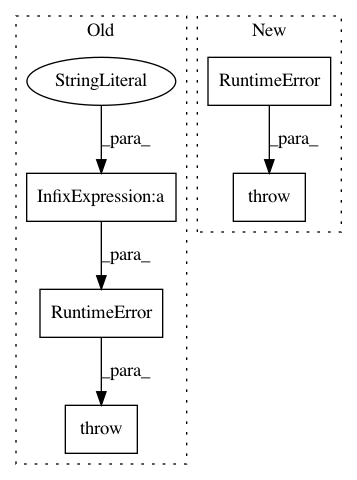

ea8eeb61740626d22e6fcff79b8d49448d095d1b,skopt/space/space.py,Categorical,distance,#Categorical#,436
Before Change
Second category.
if not (a in self and b in self):
raise RuntimeError("Can only compute distance for values within "
"the space, not %s and %s." % (a, b))
return 1 if a != b else 0
class Space:
After Change
Second category.
if not (a in self and b in self):
raise RuntimeError("Can only compute distance for values within"
" the space, not {} and {}.".format(a, b))
return 1 if a != b else 0
class Space(object):
In pattern: SUPERPATTERN
Frequency: 4
Non-data size: 5
Instances
Project Name: scikit-optimize/scikit-optimize
Commit Name: ea8eeb61740626d22e6fcff79b8d49448d095d1b
Time: 2017-06-20
Author: jvmirca@gmail.com
File Name: skopt/space/space.py
Class Name: Categorical
Method Name: distance
Project Name: marcoancona/DeepExplain
Commit Name: d0b03af329a2b2bf679ae33981f34636ce19690a
Time: 2017-11-03
Author: marco.ancona@inf.ethz.ch
File Name: deepexplain/tensorflow/methods.py
Class Name: DeepExplain
Method Name: explain
Project Name: ilastik/ilastik
Commit Name: 28346133c84edffcd27819e3322d4b67fc6a711d
Time: 2019-05-06
Author: k-dominik@users.noreply.github.com
File Name: ilastik/widgets/viewerControls.py
Class Name: ViewerControls
Method Name: export
Project Name: ilastik/ilastik
Commit Name: 5b470f8f8c0146591b42462c6b30e85a2117261f
Time: 2019-06-17
Author: tomaz.vieira@embl.de
File Name: ilastik/applets/dataSelection/dataSelectionGui.py
Class Name: DataSelectionGui
Method Name: _createDatasetInfo